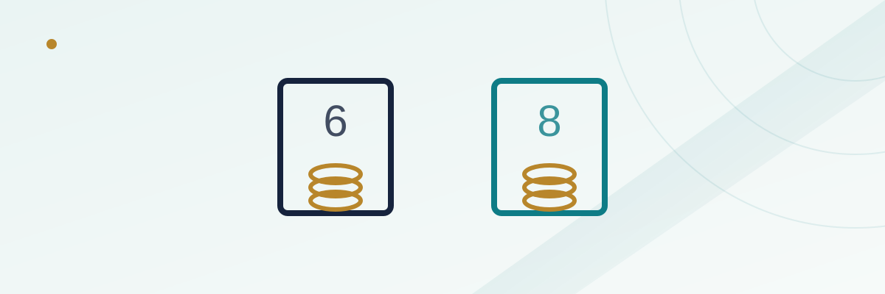

Craps Place Bets: 6 and 8 vs. the Field and Pass Line Odds

Walk past a busy craps table and you'll usually see more chips sitting on the numbers 6 and 8 than anywhere else on the layout. That's not superstition — it's the two most frequently rolled point numbers besides 7, and a place bet lets a player wager directly on one of them without waiting for a shooter to establish it as the actual point. It's one of the more approachable bets on the table once you separate it from the pass line and don't pass bets it often gets confused with, and it carries a house edge that lands in a very specific spot: better than most of the layout's single-roll bets, worse than the odds bet that sits right next to it.
In this guide
What a place bet actually is
A place bet is a wager, made at any point after the come-out roll (not before), that a specific number — 4, 5, 6, 8, 9, or 10 — rolls before a 7 does. Unlike a pass line bet, it doesn't require the shooter to establish that number as the point first; a player can place a bet directly on the 6 the moment they sit down, independent of whatever number the shooter's actual point happens to be. It can also be turned "off," taken down, or increased at any time between rolls, which gives it more flexibility than a pass line wager locked in for the length of a shooter's turn.
The dealer places the chips directly in the corresponding numbered box on the layout, and the bet stays working (unless a player asks the dealer to turn it off) until it either wins on that number, loses on a 7, or the player removes it.
The payout structure and why 6/8 differ from 5/9 and 4/10
Place bets don't all pay the same odds, because the six and eight box numbers occur more frequently than the others among the ways dice can combine to produce them. A place bet on 6 or 8 pays 7-to-6; a place bet on 5 or 9 pays 7-to-5; and a place bet on 4 or 10 pays 9-to-5. The payout shrinks as the number's true rolling frequency increases, which is exactly how a casino keeps a built-in edge on a bet that's otherwise just "will this number beat a 7."
The 7-to-6 payout on 6 and 8 specifically is why these two bets are usually made in multiples of $6 (or $12, $18, and so on) — it's the only clean way to get a whole-dollar payout out of a 7-to-6 ratio. A $6 bet on the 6 pays $7 if it hits; a $5 bet would produce an awkward $5.83, which most tables round down rather than up.
How the house edge is actually calculated
The house edge on a place bet comes directly from comparing the true odds of the number hitting before a 7 against the payout actually offered. For the 6 or 8, there are five ways to roll that number against six ways to roll a 7, meaning true odds are 6-to-5 against the bettor — but the house only pays 7-to-6, a smaller payout than the true odds would require for a fair bet. Run that gap through the math and the house edge on place 6 or place 8 comes out to about 1.52%, noticeably better than most other bets on the layout that aren't pass line or odds-related.
The 5 and 9 place bets carry a house edge of about 4.0%, and the 4 and 10 place bets sit at roughly 6.67% — both meaningfully worse than 6 or 8, because the payout structure doesn't compensate as generously for their lower relative rolling frequency against a 7.
| Place bet number | Payout | Approximate house edge |
|---|---|---|
| 6 or 8 | 7-to-6 | ~1.52% |
| 5 or 9 | 7-to-5 | ~4.00% |
| 4 or 10 | 9-to-5 | ~6.67% |
Place bets vs. the field bet
The field bet is craps' one-roll bet on 2, 3, 4, 9, 10, 11, or 12 appearing on the very next roll, and it's tempting to compare it to place bets since both feel like a way to bet on numbers directly rather than through the pass line. The field bet's house edge typically runs around 2.7% to 5.5% depending on how a specific table pays the 2 and 12 (some pay double on both, some pay triple on one and double on the other), which puts it worse than a 6 or 8 place bet in most configurations, but potentially competitive with a 5 or 9 place bet depending on the exact field payout rules in play.
The structural difference matters more than the raw percentage, though: the field bet resolves in a single roll every time, win or lose, while a place bet stays working roll after roll until it either hits or a 7 appears. That makes place bets a slower-moving, lower-variance way to have money on the table compared to the field's roll-by-roll swings.
Place bets vs. pass line odds
This is the comparison that actually matters most for a player deciding how to build a session around the 6 and 8. A pass line bet backed by full odds carries a combined house edge well under 1% once the free-odds portion is factored in, because the odds bet itself pays at true mathematical odds with zero house edge layered on top of the flat pass line wager. A place bet on 6 or 8, at roughly 1.52%, is a fine bet in isolation, but it's mathematically worse than taking a pass line bet and backing it with odds — the tradeoff is that a place bet doesn't require waiting for that specific number to become the actual point, and it can be started or stopped on any roll rather than being locked to the length of a single shooter's turn.
See our guide on craps basics and pass line odds for the full mechanics of how the odds bet gets its zero-edge status, and our piece on Don't Pass and Don't Come for the mirror-image version of the same free-odds structure on the other side of the line.
A worked example
Say a player places $12 on the 6 and $12 on the 8 at the same time, a common way to cover both of the most frequently rolled numbers simultaneously. If the shooter rolls a 6, the 6 bet wins $14 (at 7-to-6 on a $12 bet) while the 8 bet stays working, unaffected. If a 7 comes up instead, both bets lose simultaneously — the shared vulnerability to a 7 is the tradeoff for covering two numbers at once, since a single roll can wipe out both wagers together in a way it couldn't if the player only had one number covered.
Over many rolls, the two bets combined behave like a slightly-worse-than-1.52%-edge proposition on whichever number hits first, since covering both 6 and 8 doesn't change the underlying edge on either bet individually — it just increases the total amount at risk to a single unfavorable roll (the 7) relative to having only one number covered.
Buying down the vig, and when it's worth it
Some tables offer a "buy" bet, which flips the structure: a player pays a 5% commission upfront (charged whether the bet wins or loses at most tables) in exchange for true odds payout on the number instead of the reduced place-bet payout. Buying the 4 or 10 specifically can lower the house edge to around 1.6%-4.8% depending on how the commission is charged, which makes it worth considering for those two numbers specifically, since their standard place-bet edge is so much higher than 6 or 8's. Buying the 6 or 8, by contrast, usually makes the bet worse, not better, since the 5% commission outweighs the small odds improvement over the already-competitive 7-to-6 place payout.
Common mistakes
The most common mistake is betting the 6 or 8 in dollar amounts that don't divide cleanly by six, quietly forfeiting a small amount of expected payout on every win through rounding. A second is treating a place bet as equivalent to backing the pass line with odds — it isn't, and a player choosing convenience and flexibility over the lowest possible house edge should at least know that's the tradeoff being made. A third is buying the 6 or 8 specifically, which usually makes the bet worse rather than better once the standard 5% commission is factored in, even though "buying" sounds like it should always be the upgrade.
Frequently asked questions
Can I place a bet on a number before the come-out roll?
No — place bets can only be made after a point has been established on the come-out roll. Before that, a player's options are limited to pass line, don't pass, or the field bet on the come-out itself.
Why do dealers ask if I want my place bet "working" during the come-out roll?
Many tables automatically turn place bets off during a come-out roll unless the player specifically asks for them to stay working, since a come-out 7 is a win for the pass line but would otherwise cost a place bettor their bet for no clear reason tied to their own number.
Is placing both the 6 and 8 a good strategy?
It's a common and reasonable way to cover the two most frequent non-seven numbers at a competitive house edge, but it doesn't reduce the edge on either bet — it simply increases total action and total risk to any single 7.
Is a place bet ever mathematically better than pass line odds?
Not on a pure house-edge basis — full pass line odds carry a lower combined edge than any place bet. A place bet's real advantage is flexibility: no waiting for a specific point, and the ability to start or stop the bet on any roll.